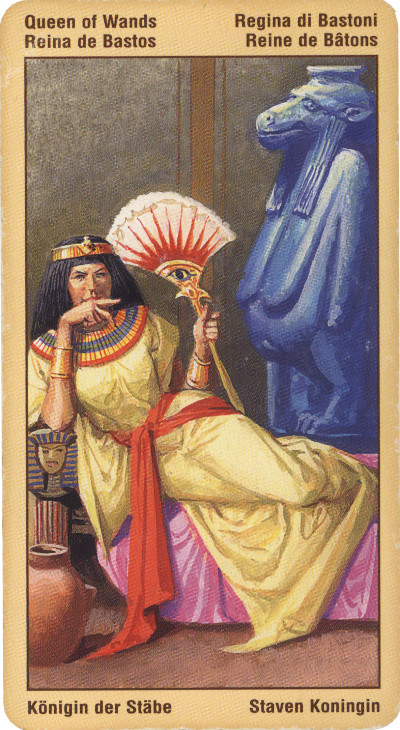

Королева Жезлов
Королева Жезлов является могущественной, энергичной женщиной, страстность которой выражается через великодушие, щедрость и созидательное начало.
Ее переполняет энергия, нередко она бывает упрямой и своенравной, обожает сражаться с вызовами судьбы, любит азарт, все это делает из нее прекрасного лидера. Часто в отношениях или в какой-либо организации она выступают в роли катализатора.
Как правило, она уверена в себе, полна энергии и фонтанирует идеями. Однако если на нее или на ее друга нападают, в защите она может стать свирепой и беспощадной. В качестве любовного партнера или родителя она проявляет себя сильной и страстной, однако при этом склонна доминировать над другими.
Актерский талант и страстность делают ее "королевой сцены.
Королева Посохов уже в раннем возрасте достаточно хорошо представляет, что ей нужно от жизни. А поскольку силы характера ей не занимать, она целенаправленно и неутомимо добивается задуманного.
Также карта показывает что пришло время начала предприятия, развития бизнеса, вложения капитала. Также время реализовать собственные желания.
В перевернутом положении – “деловая женщина”, жертвующая ради призрачной идеи слишком многим. Отсюда разлад в семье и общий неуспех дел.
Выпадая в раскладе, эта карта не обязательно относится к людям, она, к примеру, может указывать на то, что ваши планы и амбиции в настоящее время неосуществимы. Не исключено, что трудности на пути к их осуществлению создает ваш завистник или же ваши собственные попытки повелевать и манипулировать другими.
В отрицательном значении: если женщина, то ревнивая, властная, опасная из-за своей рассчетливости, лживая. Неверность, супружеская измена, жадность и алчность.